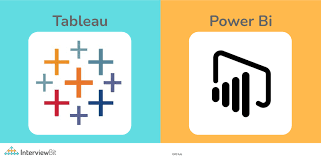

"I am a junior data scientist from India with experience in machine learning and data analysis. I was an intern in pairview limited, London.I think that a desire and curiosity for taking on problems lead to more inventive outcomes in the market".
Furthermore interested in AI and IoT to overcome new challenges and seize numerous opportunities.


A brain tumor is an abnormal growth of tissue in the brain.The tensorflow model can be used to detect if the MRI image contains tumor or not. The tumor region can be viewed using Image processing methods applied through opencv. Building a detection model using a convolutional neural network in Tensorflow & Keras.
.
Data Exploritory Analysis
"Flight delays are inconvenient for passengers and result in exorbitant financial losses for airlines and countries. A structured prediction system is an essential instrument that can assist aviation authorities in efficiently mitigating aircraft delays. Based on real-time flight data, the goal of this project is to create a two-stage machine learning engine that can accurately anticipate a flight's arrival delay in minutes after departure" .

"Over 80% of CEOs believe that data is essential to the overall success of their company. Data is the new gold. Additionally, businesses are finding it harder and harder to turn the flow of information into outcomes that can be taken. Companies may harness the value of their data and use it to inform decisions by implementing an effective data strategy.".

A significant group of machine learning algorithms known as recommender systems provide users with "relevant" recommendations. All of these services—YouTube, Amazon, and Netflix—have recommendation systems that suggest your next video or purchase based on your past browsing history (content-based filtering) or on the browsing habits of other users who have your interests (collaborative filtering). Similar to how Google suggests persons you may know offline, Facebook utilises a recommendation engine to suggest Facebook users.Recommendation, The similarity of either the material or the persons who access the content is the basis on which systems operate.This machine learning model would be based on cosine similarity as its foundation.

The tendency of customers to give up and stop being a paying customer of a certain firm is known as customer churn (or customer attrition). The customer churn (attrition) rate is the proportion of customers who stop utilising a company's goods or services during a specific period of time.Churn Prediction Model is a prediction model that determines the probability (or susceptibility) that a customer would discontinue doing business with the company on a per-customer basis. It provides you with information on the likelihood that you will lose a certain customer in the future for each one of them at any given time.The tendency of customers to give up and stop being a paying customer of a certain firm is known as customer churn (or customer attrition). The customer churn (attrition) rate is the proportion of customers who stop utilising a company's goods or services during a specific period of time.Churn Prediction Model is a prediction model that determines the probability (or susceptibility) that a customer would discontinue doing business with the company on a per-customer basis. It provides you with information on the likelihood that you will lose a certain customer in the future for each one of them at any given time.